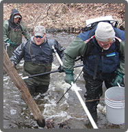
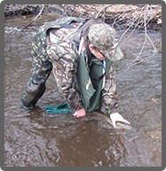

HomePage
Main Navigation
About the TRAA
The TRAA works at grassroot level across the Thames River Watershed to:
- Protect, enhance and regenerate a viable, multi-species, year-round fishery.
- Promote and participate in environmental clean-up, pollution control and rehabilitation.
- Breed, relocate and stock to re-establish or augment appropriate species of fish.
- Promote Environmentally sound sport fishing practices

More about the TRAA
In the spring of 1986 the TRAA was formed by anglers concerned with the state of the fishery in the Thames River watershed, particularly the dwindling smallmouth bass population in the North Thames River. The TRAA is not a fishing club, although most members are anglers and share fishing as a common interest. We are a "hands on" environmental group who likes to work at a grass roots level.The TRAA is a volunteer organization, governed by a formal constitution and by-laws. Read More

